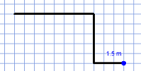
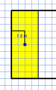
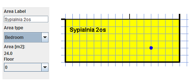
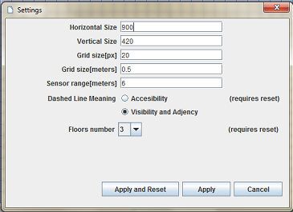

Elementy głównego okna programu
Tworzenie rozkładu pomieszczeń
Tworzenie obrysu
Dzielenie obszarów
Właściwości obszarów
Drzwi, linie przerywane, cofanie podziału, czujniki bezpieczeństwa, testy zgodności
Elementy diagramów projektowych
Widok pięter
Ustawianie liczby pięter
Widok wielu pięter i relacje między piętrami
Podgląd hipergrafów
Ustawienia sytemu
Walidacja projektu
Język testów HSSDR
Wybór zestawów testów
Zestawy testów
Lista dostępnych symboli
Definiowanie nowych relacji
Za pomocą zakładek(4,5,6,7) możliwa jest zmiana kontekstu pracy pomiędzy edycją rozkładu pomieszczeń pojedynczego piętra, edycją relacji pomiędzy piętrami, a edycją lub wyborem zestawów testów zgodności które są wykonywane dla projektu. Po zmianie zakładek zmienia się zawartość panelu głównego(8) oraz akcje dostępne w lewym panelu(9).
Tworzenie rozkładu pomieszczeń rozpoczyna się od narysowania obrysu. Następnie może on być dzielony na mniejsze pomieszczenia, można nanosić dodatkowe elementy oraz cofać swoje akcje. Aby określić rozmiaru dostępnego arkusza, gęstości siatki i inne parametry należy przed rozpoczęciem projektowania skorzystać z ustawień systemu. Możliwa jest zmiana wielkości widoku za pomocą przycisków ("+", "-") górnej części lewego panelu.
Aby rozpocząć rysowanie obrysu należy nacisnąć lewy przycisk myszy na kratkowanym obszarze. Następnie przesuwając kursor po siatce dodawane są kolejne odcinki.Aby wycofać się z aktualnie rysowanej linii należy nacisnąć prawy przycisk myszy. Rysowanie obrysu kończy się w momencie zapętlenia łamanej.
Po stworzeniu obrysu można dowolnie dzielić obszary na mniejsze. Aby dokonać podziału należy zaznaczyć wybrany obszar klikając na niego lewym przyciskiem myszy. Następnie, po kliknięciu na krawędzi zaznaczonego obszaru rozpoczyna się rysowanie linii podziału. Aby wycofać się z aktualnie rysowanej linii należy nacisnąć prawy przycisk myszy. Linia podziału kończy się w momencie osiągniecia krawędzi obszaru, w tym samym momencie obszar jest dzielony.
W celu wprowadzenia właściwości obszaru należy go najpierw zaznaczyć, klikając lewym przyciskiem myszy. Zaznaczone obszary kolorowane są na żółto, natomiast obszary znajdujące się pod kursorem na niebiesko. Aby odznaczyć należy ponownie kliknąć na zaznaczony obszar lub zaznaczyć inny. Dla zaznaczonego obszaru można w lewym panelu wprowadzić jego nazwę (pole „Area Label”) oraz wybrać rodzaj pomieszczenia (list rozwijana „Area Type”). W kolejnym polu wyświetlana jest powierzchnia obszaru w metrach kwadratowych.
Dolne menu składa się z następujących elementów:
Przyciski 1 i 2 pozwalają na zmianę linii podziału pomiędzy linią ciągłą a przerywaną. Linia przerywana oznacza w zależności od wybranej konfiguracji:
Naciśnie przycisku dodawania drzwi (3) powoduje przejście w tryb dodawania drzwi. Mogą one być umieszczane tylko na ścianach, za pomocą lewego przycisku myszy. Aby wyjść z trybu dodawania drzwi należy ponownie nacisnąć przycisk dodawania drzwi

Za pomocą przycisku cofania podziału (4), aktywuje się nowe okno pokazujące historię podziałów dokonanych w projekcie. Po kliknięciu na węzeł w drzewie podziałów, pomieszczenia powstałe w jego wyniku zostają podświetlone. Następnie, klikając przycisk poniżej można usunąć zaznaczony podział. Tylko podziały na dole hierarchii mogą być usuwane. Aby usunąć podział znajdujący się wyżej w hierarchii, należy najpierw usunąć późniejsze podziały. Aby zamknąć okno historii podziałów należy ponownie nacisnąć przycisku cofania podziału (4).

Przycisk kasowania(5) usuwa cały projekt.
Przycisk wywoływania testów zgodności(6) powoduje wykonanie aktualnie wybranych testów. Ich wyniki prezentowane są w konsoli walidacji projektu(7).
Do projektu mozna dodawać również czujniki bezpieczeństwa, reprezentujące takie urządzenia jak czujnik ruchu, kamery przemysłowe, czujnik dymu, poziomu dwutlenku węgla lub spalin, temperatury, itp. W celu dodania czujnika bezpieczeństwa należy:

Wszystkie ementy diagramów projektowych zaprezentowane są na poniższym przykładzie.
W przypadku projektowania budynków wielopiętrowych należy zacząć od wybrania liczby pięter w ustawieniach. Aby wybrać piętro do edycji należy skorzystać z listy rozwijanej w lewym panelu.

W celu stworzenia punktu odniesienia obrys parteru jest zaznaczany jasnoszarą linią również na wyższych piętrach.

Po wybraniu zakładki widoku pięter pokazywane są wszystkie piętra, z parterem najniżej i ostatnim piętrem najwyżej. W tym widoku można zobaczyć w całości projektowany budynek oraz wprowadzić relacje międzypiętrowe.
Dostępne są tutaj następujące typy relacji:
Aby dodać relację między piętrami należy po wybraniu typu relacji, kliknąć lewym przyciskiem myszy na pomieszczenie na jednym z pięter. Pomieszczenie znajdujące się pod kursorem zostanie podświetlone i to ono będzie wchodziło w skład relacji. Po wybraniu pierwszego pomieszczenia pojawi się strzałka symbolizująca relację. Następnie należy kliknąć na kolejne pomieszczenie aby je dodać do relacji. Aby zakończyć należy użyć prawego przycisku myszy.

Hipergrafy są wewnętrzna strukturą danych używaną do zapisu projektu przez HSSDR. Ich podgląd nie jest niezbędny do używania systemu, zakładka ta służy na potrzeby analizy programu. Na liście rozwijanej w lewym panelu możliwy jest wybór prezentacji wyświetlania hipergrafu dla poszczególnych pięter lub całego budynku. Możliwe jest przesuwanie elementów na planszy. W celu powiększenia/pomniejszania należy skorzystać z przycisków ("+", "-") w górnej części lewego panelu.

Po wybraniu opcji z menu Settings można zmienić następujące ustawienia systemu:
Zmiana dwóch ostatnich parametrów wymaga usunięcia bieżącego projektu (przycisk Apply and Reset). Pozostałe parametry mogą być zmienione w dowolnym momencie projektowania (przycisk Apply).
Język testów HSSDR jest ogólnym językiem pozwalającym formułować waunki dla projektu. Warunki te są zapisywane w formie testów, zgupowanych w zestawy testów. Mogą one dotyczyć:
Formuły języka testów HSSDR odnoszą się do obiektów istniejących w analizowanym projekcie, a więc do drzwi, pomieszczeń, a także do relacji i właściwości charakteryzujących obiekty, zarówno bezpośrednich jak i obliczonych przez system. Wewnętrzna reprezentacja projektu jest aktualizowana automatycznie po każdej zmianie projektu. Rezultaty testów, wykonywanych w tle, są prezentowane poprzez informacje tekstową w konsoli walidacji projektu lub poprzez wyróżnienie niespełniających wymagać fragmentów projektu.
Język testów HSSDR jest oparty na języku logiki pierwszego rzędu. Zawiera on także pewne dodatkowe konstrukcje przydatne podczas definiowania zestawów testów dla projektów architektonicznych. Umożliwia on dodawanie komentarzy oraz instrukcji określających wiadomości przekazywane użytkownikom po wykonaniu testów. Język ten korzysta ze słów kluczowych, zmiennych oraz predefiniowanych funkcji i relacji, ale pozwala też użytkownikom definiować własne relacje.
W projekcie wyróżnia się pokoje (Rooms) oraz obszary (Areas). Wszystkie pomieszczenia jakie podstawly w wyniku podziałów to obszary, natomiast pokoje to pomieszczenia znajdujące się na dole hierarchiii podziałów które nie były dalej dzielone.Obszary zawierają pokoje w hierarchii podziałów.. Pokoje są widoczne w edytytorze pomieszczeń, hierarchie obszarów można zobaczyć za pomocą opcji cofania podziału.
W zakładce walidacji projektu można włączać/wyłączać zestawy testów a także modyfikować ich zawartość.
Każdy zestaw testów to plik tekstowy, identyfikowany przez nazwę pliku. W lewej części ekranu znajduje się lista zestawów testów.
Aby zestaw był prany pod uwagę podczas pracy nad projektem należy zaznaczyć odpowiednie pole(kolumna „Enabled”).
Po wybraniu pliku na liście, jego zawartość jest wyświetlana w prawej części ekranu. Zawartość zestawy testów można modyfikować.
Aby zmiany zostały zapisane należy skorzystać z przycisku poniżej zapisu („Save File”).
Ograniczenia projektowe zostały zorganizowane w zestawy testów, które można aktywować dopasowując swój wybór do konkretnego projektu. Zestawy testów są zbiorami formuł języka testów HSSDR przechowywanymi w plikach. Mogą one zawierać formuły końcowe oraz definicje pomocnicze.
W skład pojedynczego zestawu testów wchodzi:
W języku testów HSSDR istnieje także możliwość definiowania nowych relacji o dowolnej liczbie argumentów w następujący sposób:
nazwa( ) <=> formuła;
lub
nazwa(x,y,z,…) <=> formuła;
Tak zdefiniowana relacja może być następnie używana w dalszych formułach.
Dla przykładu, w testach opisujących normy przeciwpożarowe ( Evacuation Route RMI-2002) wprowadzona zostaje definicja relacji
jednoargumentowej ZoneDoors:
ZoneDoors(d) <=> exists r in Rooms: doorsInRoom(d,r) and type(r) = "Staircase";
która następnie może być użyta w kolejnych formułach, np. w celu zdefiniowana kolejnej relacji
FireSafetyDoors :
FireSafetyDoors(d)<=> ExternalDoors(d) or ZoneDoors(d);
Możliwe jest również definiowanie relacji w sposób rekurencyjny, np:
silnia(x,y) <=> x>=1 and y>= 1 and ((x=1 and y=1) or silnia(x-1,y/x) );
Zdefiniowane przez użytkownika relacje pomocnicze są dostępne tylko w obrębie pojedynczego zestawu testów.